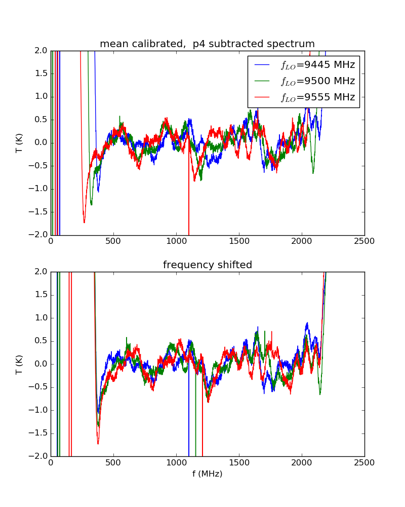
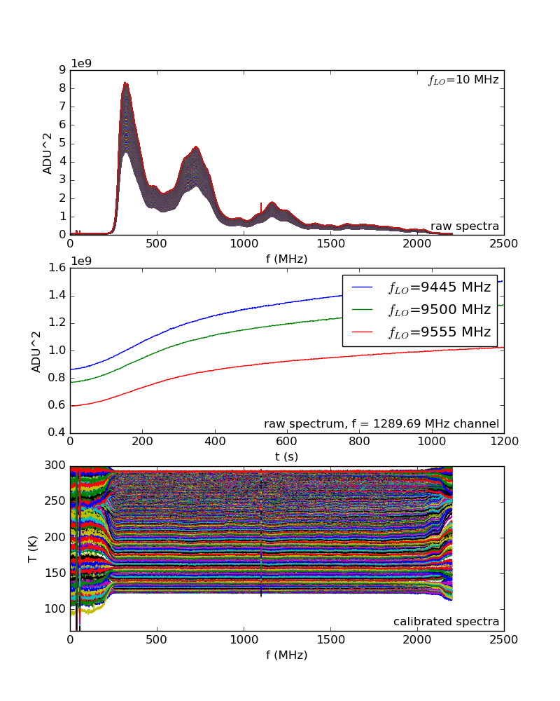
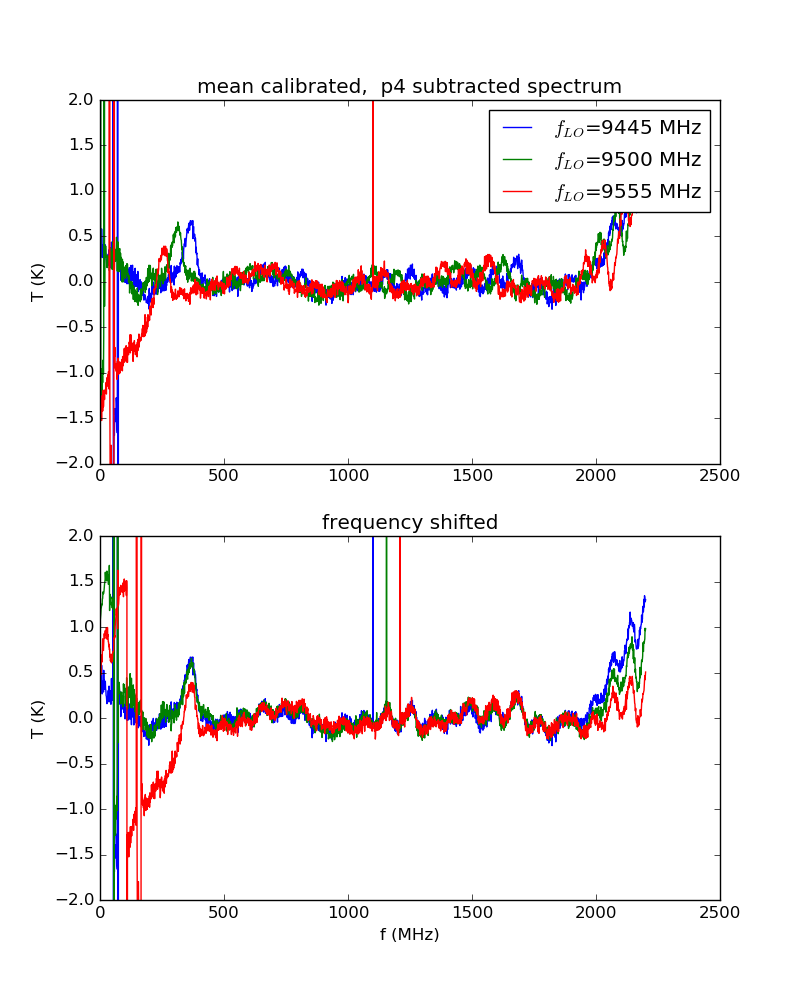
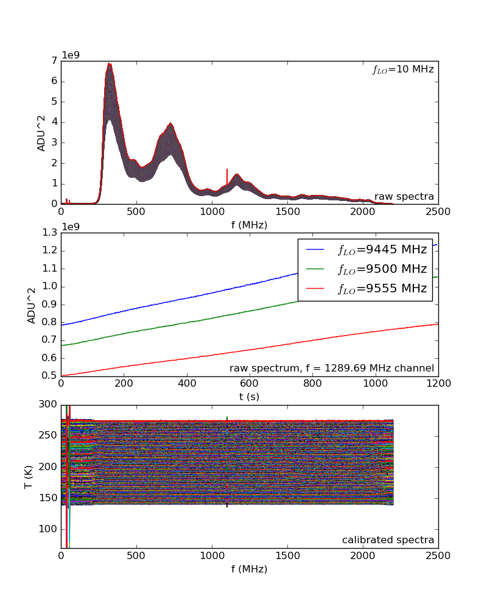
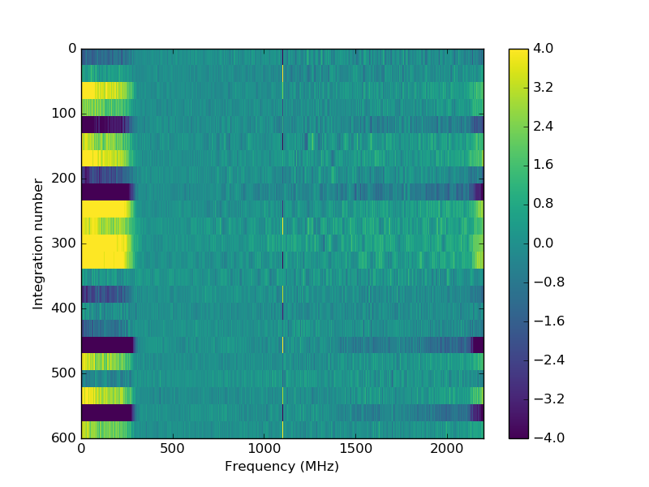
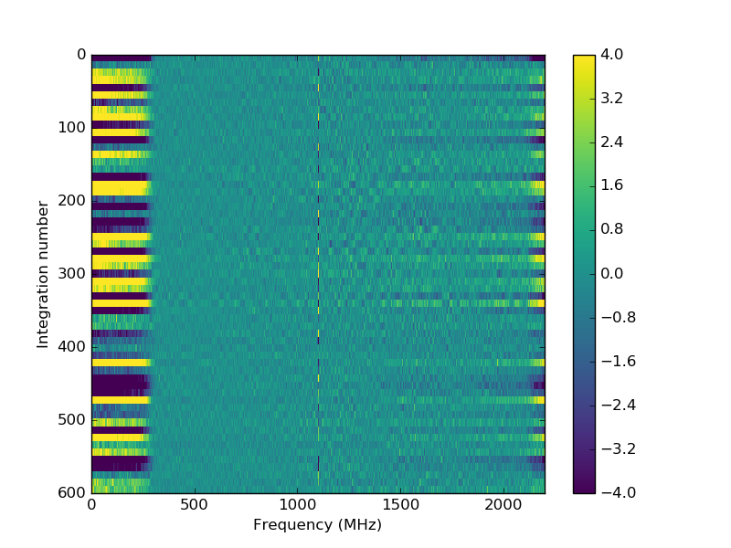
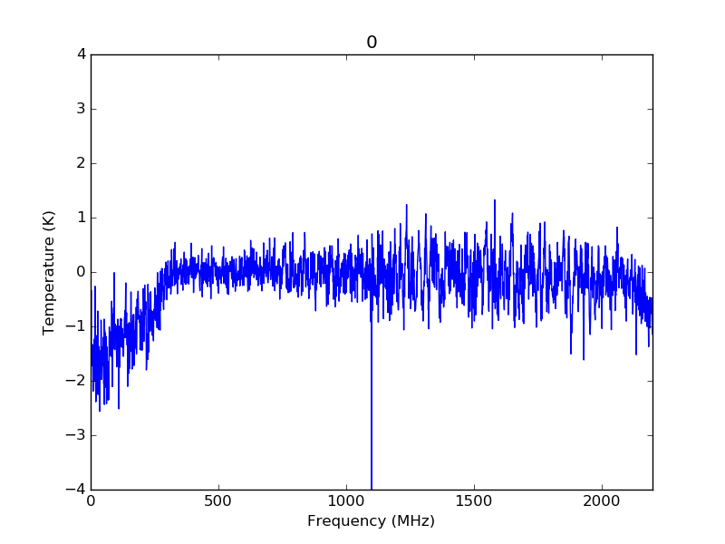

This trial appears to have slightly more pronounced structure than the non-suspended, non-mylar-and-towel version shown in figure 17 here.
Fig 1
| a - calibrated mean spectrum | b - raw spectra |
|---|---|
|  |  |
Figure 2 shows the calibrated spectra for the suspended horn with just the baffle.
This trial appears to have slightly less pronounced structure than the non-suspended version shown in figure 4a and 4b here.
Fig 2
| a - calibrated mean spectrum | b - raw spectra |
|---|---|
|  |  |
Figure 3 shows the effect of dumping LN2 directly on the baffle. It was calculated by using a previous calibration to generate calibrated spectra. It shows the difference between temporally adjecent mean spectra.
LN2 was dumped at the 150th integration and stopped at the 400th integration. It seems as if the standing-wave-like wiggles begin to form there, and then fade as time goes on.
We can take the means of fewer spectra to increase the time resolution of this plot at the expense of SNR. The wiggle behaviour is not as obvious in this case (3b).
Figure 3c shows the same data as 3a, but animated in order to better see structure over time.
Fig 3
| a - Groups of 25 | b - Groups of 10 | c - Groups of 25, animated |
|---|---|---|
|  |  |  |
It is unclear whether suspending the horn above the box or the towel and mylar did much to decrease the gas exchange, because of the slightly more pronounced features compared to the non-suspended, non-mylar-and-towel trials.
{kind=link}
{kind=link}
{kind=link}
{kind=link}
{kind=link}
{kind=link}
{kind=link}